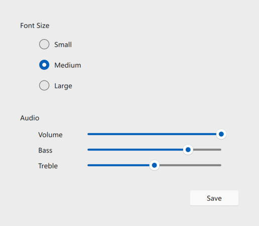
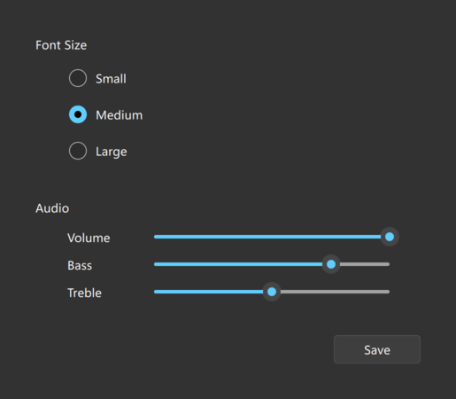

FluentWinUI3 Style
The FluentWinUI3 Style is a modern, native-looking style designed for platforms running Windows 11 and above. More...
| Import Statement: | import QtQuick.Controls.FluentWinUI3 |
| Since: | Qt 6.8 |
Detailed Description
The FluentWinUI3 style draws inspiration from the Fluent UI design and the WinUI3 framework. It utilizes image assets for most of the visual elements while at the same time adhering to the global theme colors configured on Windows systems and the palette.
The FluentWinUI3 style is not a native style and can be run on all supported platforms, looking more or less identical everywhere. Minor differences may occur due to differences in available system fonts and font rendering engines.
 The light theme of the FluentWinUI3 style. |  The dark theme of the FluentWinUI3 style. |
To run an application with the FluentWinUI3 style, see Using Styles in Qt Quick Controls.
Current state
The FluentWinUI3 style is under development, and some controls are not yet supported. Those controls are: Dial, Drawer, HorizontalHeaderView, SplitView, StackView, SwipeDelegate, SwipeView, TreeViewDelegate, Tumbler, and VerticalHeaderView. Those will fall back to use the Fusion Style.
Customization
Palette
The FluentWinUI3 style supports palette customization via the palette property and the qtquickcontrols2.conf file. As with other styles, the exact palette roles that the FluentWinUI3 style uses are style-dependent.
Note: Since the style incorporates image assets, certain elements of the control may not be customizable.